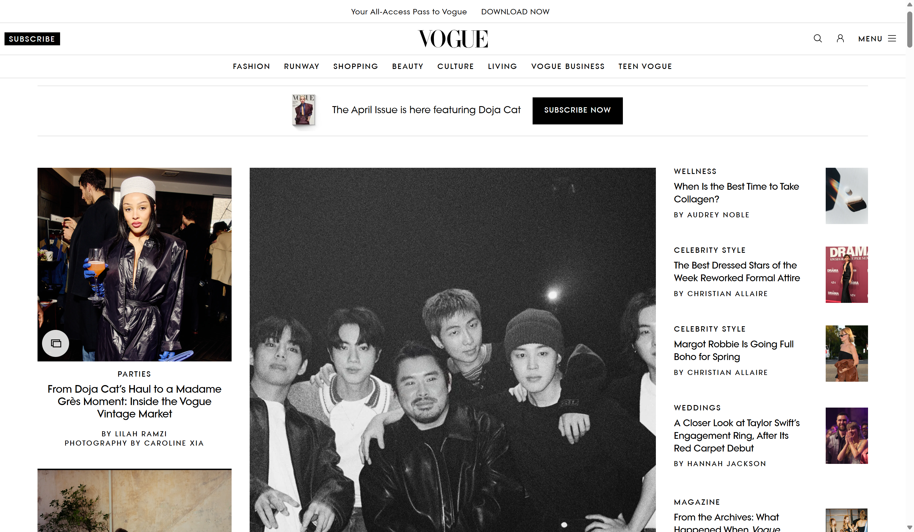
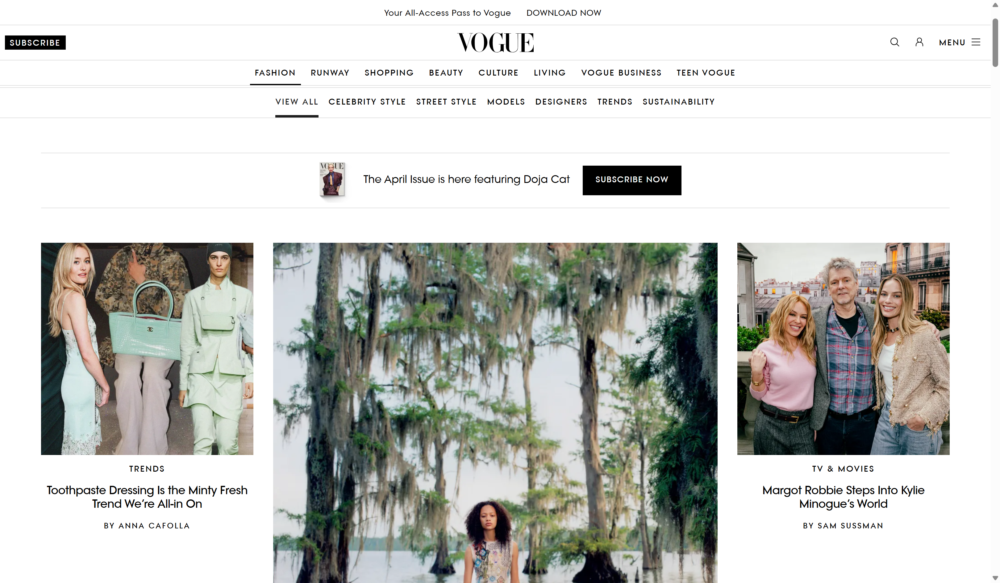
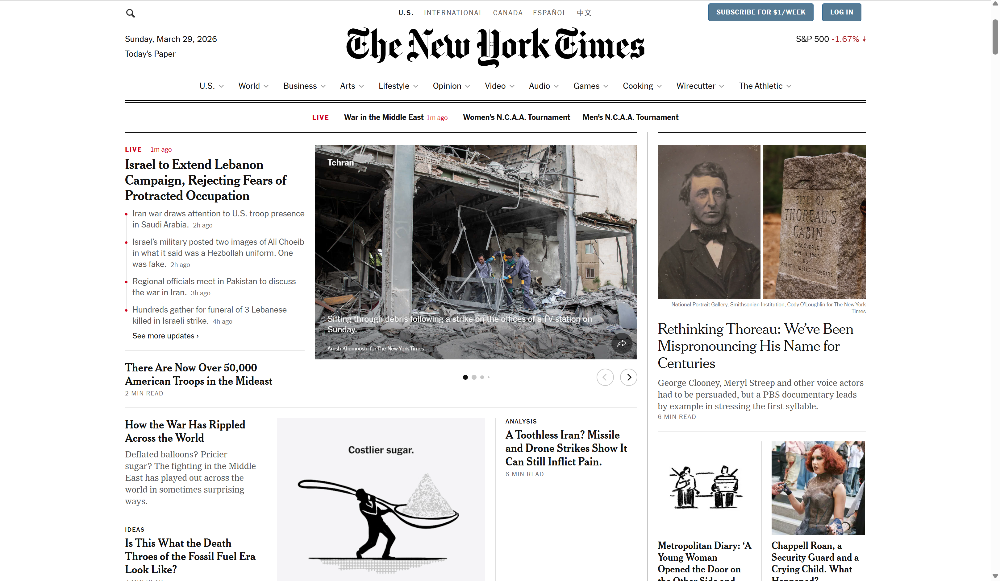
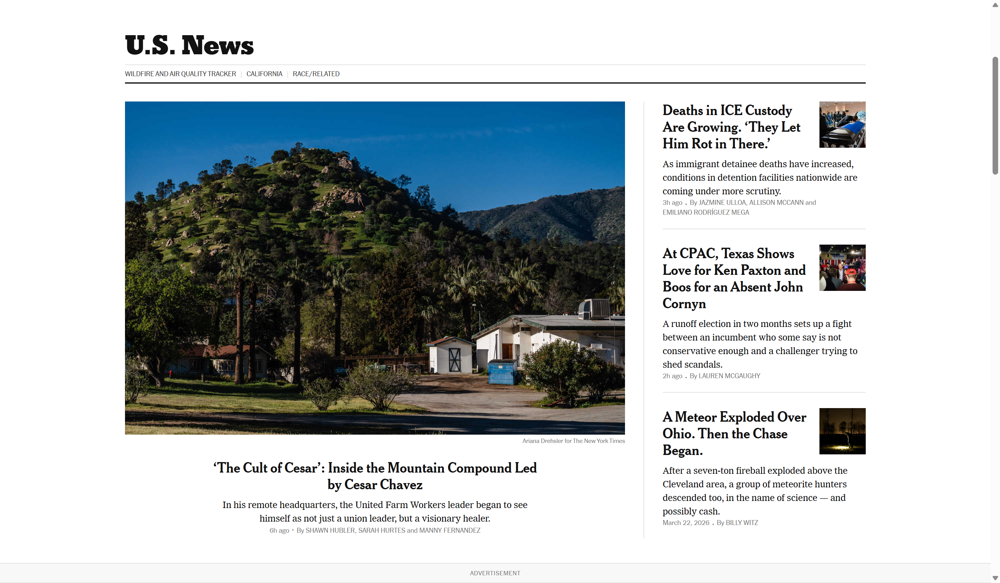

Typography is a defining element of digital design because it determines not only how content looks, but how easily it can be read and understood. A comparison between the Vogue website and The New York Times website highlights two distinct typographic strategies—one centered on visual cohesion and modern simplicity, the other on editorial tradition and structural complexity.
Vogue: Modern Simplicity and Visual Cohesion
The Vogue website leans heavily on sans‐serif typography, creating a sleek, contemporary aesthetic. The fonts are clean, evenly weighted, and rendered at sizes that support comfortable reading across devices. This consistency establishes a strong visual identity that aligns with Vogue's brand as a modern, fashion‐forward publication.
One of the most effective aspects of Vogue's typography is its restraint. The site uses a limited number of typefaces, which reduces visual noise and makes navigation intuitive. Headlines, subheadings, and body text are clearly differentiated through size, spacing, and weight rather than by introducing entirely different font families. This creates a cohesive reading experience where the user can quickly scan content without cognitive friction.
Spacing and layout further enhance readability. Generous line height, balanced margins, and uncluttered sections allow the typography to “breathe,” making articles feel approachable and polished. The result is a user experience that feels both elegant and efficient.


The New York Times: Tradition and Typographic Complexity
In contrast, The New York Times website employs a mix of serif and sans‐serif fonts, reflecting its roots in traditional print journalism. Serif typefaces are commonly used for article body text, evoking credibility and authority, while sans‐serif fonts are introduced for navigation, headlines, and interactive elements.
While this combination has a clear rationale, it can feel inconsistent in a digital context. The presence of multiple font families across a single page can disrupt visual harmony, especially when combined with varying sizes and weights. For some users, this creates a sense of fragmentation rather than a unified reading experience.
Additionally, the density of content on the site can amplify these issues. With numerous headlines, sidebars, and embedded elements competing for attention, the typography must work harder to establish hierarchy. When that hierarchy isn't immediately clear, the page can feel more difficult to scan and read efficiently.


Key Differences in Approach
The contrast between these two websites reflects broader design priorities:
- Vogue prioritizes aesthetic cohesion and readability through a consistent sans‐serif system. Its typography supports a streamlined, modern browsing experience.
- The New York Times prioritizes editorial tradition and information hierarchy, using a mix of serif and sans‐serif fonts to differentiate content types, though this can come at the cost of visual unity.
Conclusion
Both typographic strategies serve their respective brands, but they lead to very different user experiences. Vogue's use of clean, modern sans‐serif fonts creates a cohesive and easily readable interface that feels polished and intentional. In contrast, The New York Times' reliance on multiple font styles can feel less unified and, at times, more difficult to navigate.
This comparison illustrates a key principle of typography in digital design: consistency and clarity often enhance usability. While variation can provide structure and depth, too much of it can undermine readability and cohesion.